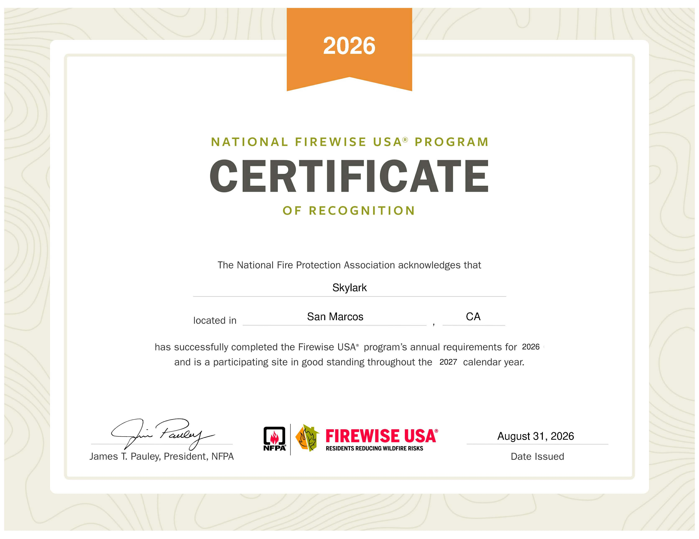

August 31, 2026
Skylark Community Approved as a Firewise USA® Site

The Skylark Fire Safe Council is proud to announce that the Skylark Community has officially been recognized as a Firewise USA® site after successfully completing the National Fire Protection Association's (NFPA) 2026 program requirements. Skylark is now a participating site in good standing through the 2027 calendar year.
This achievement reflects the dedication of Skylark residents, volunteers, and community leaders who have worked together to reduce wildfire risk and strengthen neighborhood preparedness.
Firewise USA® is a nationally recognized program administered by the NFPA that helps communities organize and take meaningful action to reduce the potential impact of wildfires through education, vegetation management, home hardening, and community-wide risk reduction efforts.
Benefits for Reducing Community Wildfire Risk
- Establishes a nationally recognized wildfire risk reduction framework for the community
- Encourages ongoing defensible space and vegetation management efforts
- Promotes home hardening practices that reduce structure ignition risk
- Supports Zone Zero awareness and ember-resistant landscaping near homes
- Strengthens partnerships with local fire agencies and emergency preparedness organizations
- Improves resident awareness through ongoing wildfire education programs
- Improves emergency readiness and evacuation preparedness
- Creates a long-term strategy for maintaining wildfire resilience year after year
Benefits for Fire Insurance Affordability
While Firewise USA® recognition does not guarantee insurance coverage or discounts, it provides documented evidence that Skylark residents are actively engaged in organized wildfire mitigation. Insurance providers and regulators are increasingly evaluating community-level and property-level wildfire mitigation measures when assessing risk.
- Demonstrates a community-wide commitment to wildfire mitigation to insurance carriers
- Provides documented, annual wildfire risk reduction activities
- Supports resident discussions with insurers regarding mitigation efforts and premiums
- Complements individual home hardening and defensible space improvements
- Strengthens applications for future wildfire resilience grants and funding opportunities
- Positions Skylark to benefit from emerging insurer-recognized mitigation credit programs
Supporting Home Hardening and Defensible Space
Firewise USA® communities emphasize practical actions that significantly reduce the likelihood of home ignition during wildfires. Residents are encouraged to adopt science-based mitigation strategies, including:
- Creating and maintaining Defensible Space around homes
- Maintaining the five-foot ember-resistant Zone Zero area around structures
- Replacing combustible fencing and gates near homes with noncombustible materials
- Removing dead vegetation and reducing fuel loads
- Using ignition-resistant construction materials where feasible
- Protecting vents, roofs, and other vulnerable entry points from ember intrusion
A Community Achievement
Achieving Firewise USA® recognition required the collective effort of volunteers, residents, firefighters, community partners, and the Skylark Fire Safe Council. We thank everyone who contributed time, expertise, and support to make this milestone possible.
This recognition is not the end of the journey — it is the beginning of a long-term commitment to maintaining a safer, more resilient community through education, preparedness, home hardening, and wildfire mitigation projects.
Learn More or Get Involved
Residents interested in learning more about wildfire preparedness, home hardening, or volunteering with Skylark Fire Safe Council are encouraged to contact the Council, attend upcoming community events, or subscribe to community updates.